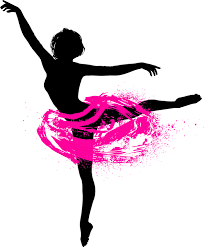
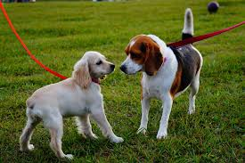
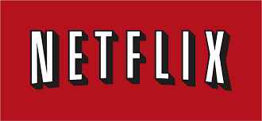

Dance is one of my favorite things because I have been doing it ever since I was three, and have not stopped loving it. Dance is a way for me to express myself and even blow off some steam if I am not having a great day. The dances I do are ballet, jazz, tap, and lyrical.

Dogs are another one of my favorite things because they are little fur balls filled with joy and happiness. I love my dog to the moon and back and she means a lot to me; she makes me so happy and brightens my day every time I see her.

Netflix is one of my favorite things because I love watching all of the different TV shows and movies it has to offer. A couple of my favorite TV shows on Netflix are That '70s Show, Parenthood, and Glee.